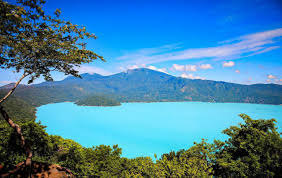
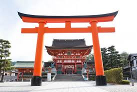
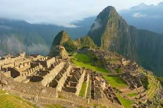
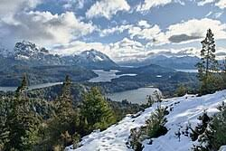
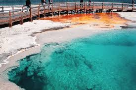
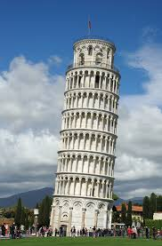

Viaje al lago de Coatepeque
El Lago de Coatepeque es un destino turístico primordial en El Salvador por ser una impresionante caldera volcánica de aguas azules que cambian a turquesa. Ofrece vistas espectaculares al Volcán de Santa Ana, ideal para deportes acuáticos (kayak, jet ski, buceo) y cuenta con restaurantes, aguas termales y la pintoresca Isla Teopán.

Santuario Fushimi Inari Tasha
Es un icono turístico mundial en Kioto por sus miles de icónicas puertas torii naranjas (Senbon Torii) que forman túneles a través del monte Inari, creando una experiencia fotogénica y espiritual única. Es el santuario sintoísta principal dedicado a Inari (deidad del éxito empresarial) y ofrece acceso gratuito, senderismo escénico y un profundo significado cultural con zorros mensajeros.

Ruinas el machu pichu
Es un destino turístico mundialmente famoso por ser una obra maestra de la arquitectura e ingeniería inca del siglo XV, declarada Patrimonio de la Humanidad (UNESCO) y una de las 7 Maravillas del Mundo Moderno. Su popularidad radica en su emplazamiento espectacular en la cima de una montaña andina, el misterio de su historia "perdida" y su excelente conservación al no ser destruida por la conquista español

San Carlos de Bariloche
Es un destino turístico icónico de la Patagonia argentina, famoso por su impresionante belleza natural, arquitectura de estilo alpino y su título como capital nacional del chocolate. Destaca por albergar el centro de esquí más grande de Sudamérica (Cerro Catedral) y ofrecer paisajes glaciares, lagos inmensos como el Nahuel Huapi y una vibrante vida nocturna

Parque Nacional Yellowstone
Es un destino turístico icónico por ser el primer parque nacional del mundo (1872) y albergar la mayor concentración de géiseres activos, incluyendo el famoso Old Faithful. Atrae a millones de visitantes por su supervolcán, aguas termales coloridas como la Grand Prismatic Spring, abundante fauna salvaje (bisontes, osos) y paisajes geotérmicos únicos.

Torre de Pisa
Es un ícono turístico mundial principalmente por su inclinación inusual y accidental, desafiando la gravedad durante siglos tras hundirse en terreno blando desde 1173. Es famosa por su valor histórico, arquitectura románica, ser patrimonio de la UNESCO y la clásica foto fingida de los visitantes